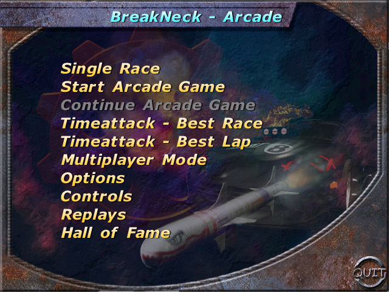
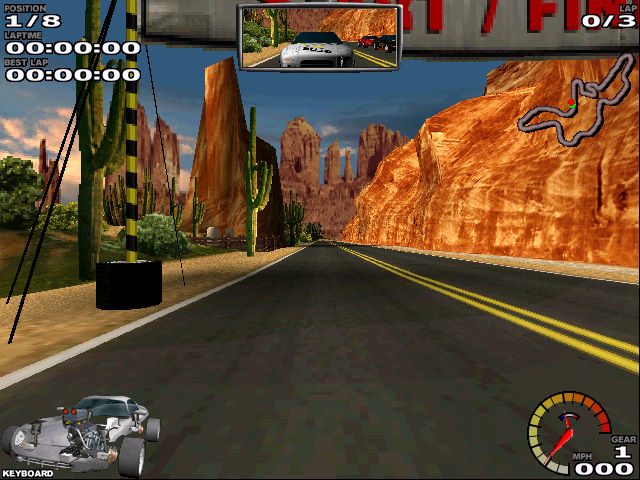

名稱：終極殺陣／斷頸 (BreakNeck／N.I.C.E. 2，英文版) 簡介：Synetic GmbH 1998年出品的賽車遊戲，2000年發佈英文版，由SouthPeak代理發行 [待補]。   備註：本版為1.1.5。 保護：光碟 備註：一代「Have a N.I.C.E. day!／Axelerator」只有德文版。 備註：VirtualBox需搭配WineD3D，並選擇Softwareengine。

